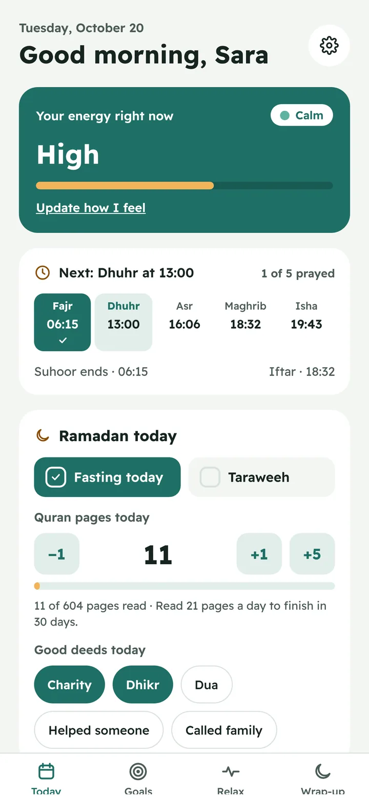

Plans around your energy
Hard work goes where you are sharpest. Easy wins go in the afternoon dip. A rough morning means a lighter day, automatically.
Youmek asks how you feel, puts hard tasks where your energy is high, and gives you a calm break when stress shows up. Prayer times and Ramadan are built in.

Hard work goes where you are sharpest. Easy wins go in the afternoon dip. A rough morning means a lighter day, automatically.
Two hours without a break, tasks you keep moving, a tired check-in. Youmek spots it and offers a one-minute reset.
Prayer times calculated for your city and kept free in your plan. Tap each prayer when you have prayed it.
From the first check-in to the last good thing you write down, Youmek keeps your day realistic and kind.

One tap: how do you feel? Your plan adjusts to your mood and energy.
Hard tasks where your energy is high. Set a time and Youmek keeps it.

Stressed or behind? Breathe for a minute, then “Fix my day” moves what will not fit.

What you did, how you felt, and three good things from today.
Turn a yearly goal into monthly, weekly and daily steps, and watch progress fill in as you finish tasks.

Brain dump everything on your mind, one line each. Sort it later and turn any thought into a task for today or tomorrow.

Water, adhkar, a walk. Tick them off and keep the streak going.
Choose 1, 3 or 5 minutes and count with a misbaha, then end with Alhamdulillah.
Box breathing, 4-7-8, a quick calm, a short walk or a stretch.
See the next prayer at a glance and mark the five as you pray them.
One button moves what will not fit to tomorrow, so the day stays doable.
Tasks done, your mood through the day and three good things.
Ramadan 2027 begins around February 8. Youmek plans around suhoor, iftar and taraweeh, keeps your workload realistic while you fast, and helps you finish the Quran.


Every screen is designed right-to-left in clear Modern Standard Arabic, with the same care as English. Switch languages anytime.
نظّم يومك حسب شعورك.
What you write in Youmek is personal. We treat it that way.
Everything you need to plan a calm day is free. Premium adds AI planning, reports and sync.
$0forever
$29.99a year
or $4.99 a month · yearly includes 7 days free
Launch offer: $3.99 a month for your first 3 months. Ends March 15, 2027.
In Ramadan: a one-time Ramadan Pass, $9.99 for 30 days.
Yes. Download it and use the planner, check-ins, breaks, prayer times, Ramadan mode, dhikr, habits and goals for free. Premium, coming early 2027, adds AI planning, reports and sync.
No. Open the app and start. Your plan is saved on your phone.
Yes. Turn prayer times off when you set up the app, or anytime in Settings. Everything else works the same.
It stays on your device. No ads, no tracking, and we never sell your data.
No. Youmek is a planning and wellbeing tool. If you are struggling, please talk to a professional or someone you trust.
iPhone, Android and the web, in English and Arabic.
Download Youmek and plan your first day around how you feel. It takes less than a minute to set up.